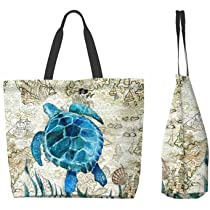

<!DOCTYPE html>
<html>
<head>
<meta name="viwe point" ::content="with=device-width,initical-scale=1.0">
<title>TURTLES OF SRI LANKA</title>
<link rel="stylesheet" href="./styles.css">
</head>
</html>
</head>
</html>
<body>
    <div class="div-bg">
        <nav>
            <div class="nav-links" id="test">
               <ul>
                   <li><a href="./index.html">HOME</a></li>
                   <li><a href="./secondpage.html"> CATEGORIES</a></li>
                   <li><a href="./thirdpage.html">THREAT</a></li>
                   <li><a href="./fourthpage.html">HIKKADUWA  HATCHERY</a></li>
                   <li><a href="./contact.html">OTHER HATCHERIES</a></li>
                   <li><a href="#">PURCHASE AND DONATIONS</a></li>
               </ul>
            </div>
       </nav> 
          <!-------PURCHASE AND DONATIONS--------->
  <section class="PURCHASE AND DONATIONS">
<br>
<br>
        <h1 style="color: aliceblue;">PURCHASE AND DONATIONS</h1>
        
<section class="pricing" id="pricing">
  

    <div class="box-container">

        <div class="box">
            
            <h3>PURCHASES</h3>
            <p>By purchasing from our online store, you not only acquire unique turtle-themed merchandise but also contribute directly to our conservation projects. Each item you buy helps fund initiatives aimed at safeguarding turtle populations and preserving their ecosystems.</p>
            <p>Explore our store and find a range of products that promote awareness and appreciation for these incredible creatures.</p>
            <a href="./shop.html" class="btn">Shop Now</a>
        </div>

        <div class="box">
            
            <h3>DONATIONS</h3>
            <p>If you wish to make a direct contribution to our turtle conservation efforts, you can donate funds to support our projects. Your generous donation will enable us to conduct research, implement conservation programs, and raise awareness about the importance of turtle preservation. Every contribution, no matter the amount, helps us make a significant impact.</p>
            <p>To make a donation, please visit our dedicated donation portal. We accept various payment methods to ensure convenience and security. Whether you choose to make a one-time donation or set up a recurring contribution, your support will make a lasting difference in the lives of turtles.</p>
            <a href="./donfrom.html" class="btn">Donate Now</a>
        </div>

</section>
  
  <footer>
    <p>&copy; 2023 Turtle Website. All rights reserved. | <a href="privacy.html">Privacy Policy</a></p>
  </footer>
  <div class="wrapper">
    <div class="button">
       <div class="icon">
          <i class="fab fa-facebook-f"></i>
       </div>
       <span>Facebook</span>
    </div>
    <div class="button">
       <div class="icon">
          <i class="fab fa-twitter"></i>
       </div>
       <span>Twitter</span>
    </div>
    <div class="button">
       <div class="icon">
          <i class="fab fa-instagram"></i>
       </div>
       <span>Instagram</span>
    </div>
    <div class="button">
       <div class="icon">
          <i class="fab fa-linkedin"></i>
       </div>
       <span>linkedin</span>
    </div>
    <div class="button">
       <div class="icon">
          <i class="fab fa-youtube"></i>
       </div>
       <span>YouTube</span>
    </div>
 </div>

</body>
</html>